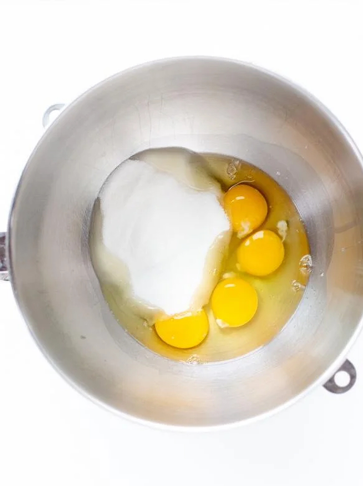
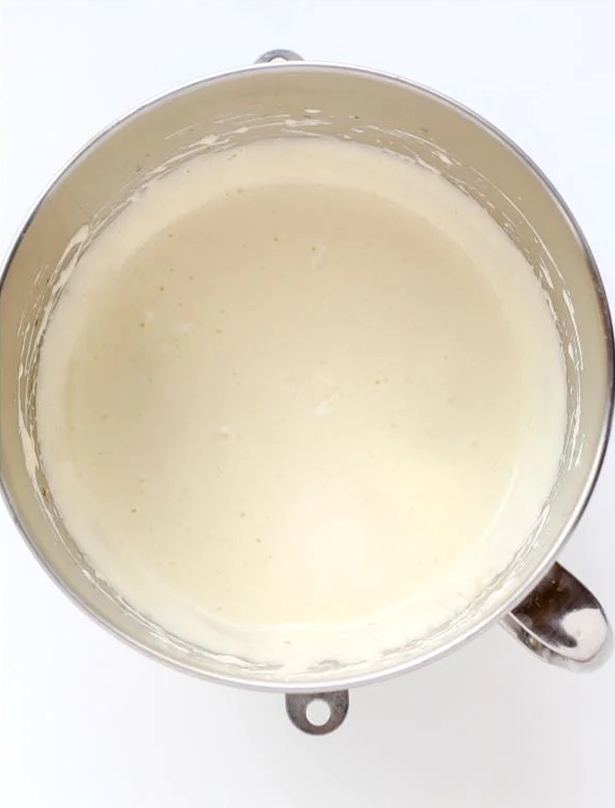
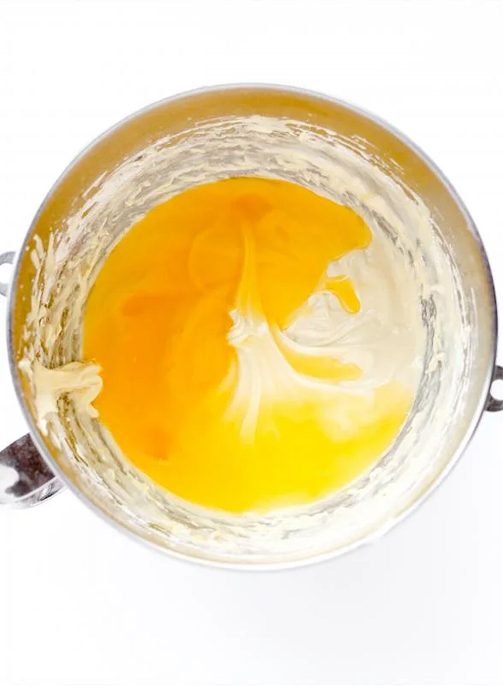
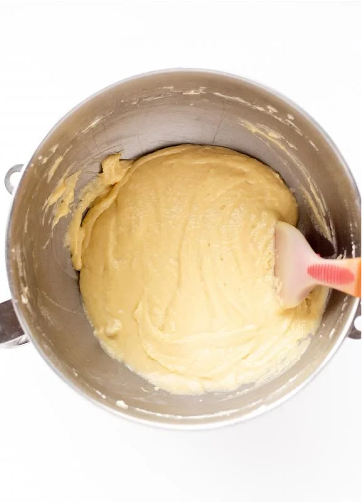
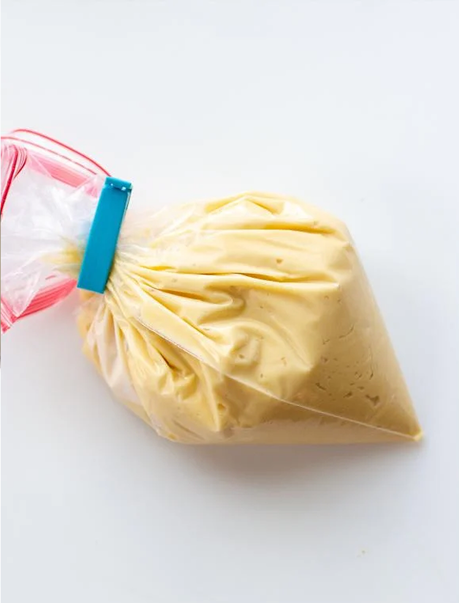
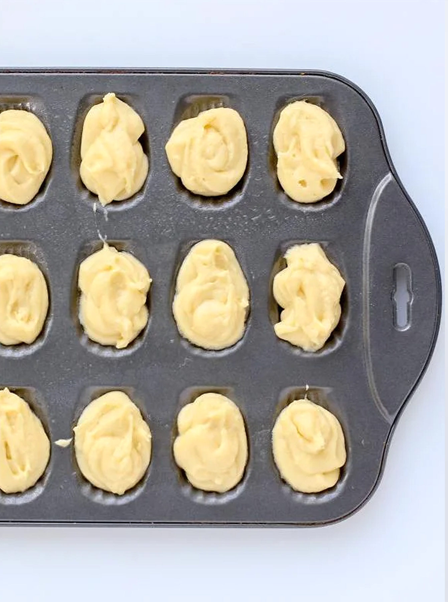

Servings 40 cookies
Prep time 10 minutes
Cook time 30 minutes
Total Time 40 minutes
A madeleine mold for baking
4 eggs
1 cup sugar
2 tbsp vanilla extract
1/2 tsp salt
2 cups flour
1 1/4 cup unsalted butter melted
Madeleines are French, shell-shaped cookies. They are crispy on the outside and soft like cake on the inside. This is a quick and easy recipe you will surely love.
Allergens: Dairy, Gluten
Source: MomsDish
1
Prepare all ingredients ahead of time. Preheat oven to 375°F. In a mixing bowl, whisk together sugar, vanilla extract and eggs.
2
Continue whisking until you get a fluffy texture.
3
In small portions, fold the flour into the mixture and blend it right until it looks mixed.
4
In a separate bowl, melt butter and let it cool to room temperature. Add butter to the mixing bowl, carefully folding it in.
5
Place all Madeleine dough into a ziplock back and cut out a corner for piping. Pipe small portions of the dough into the Madeleine mold.
6
Bake for about 10-15 minutes, depending on the mold size. Madeleines are ready when golden brown.